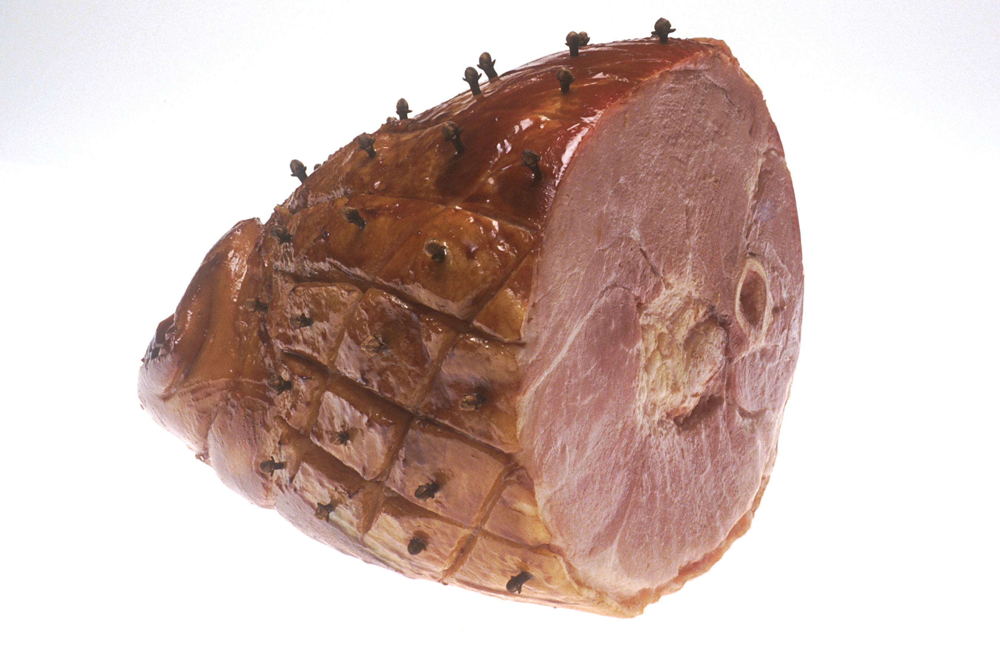

Hobby #2
Going
/ˈɡōiNG/, Noun
"Going" is an incedibly versatile hobby, and can be used to describe many productive activities. For example, one may "go" run some errands, or one could "go" to sleep at a reasonable hour. "Going" can also be used in a more casual manner, such as in the common popular culture (pop culture) catchphrases: "Going" ham, and "Going" off I guess.
